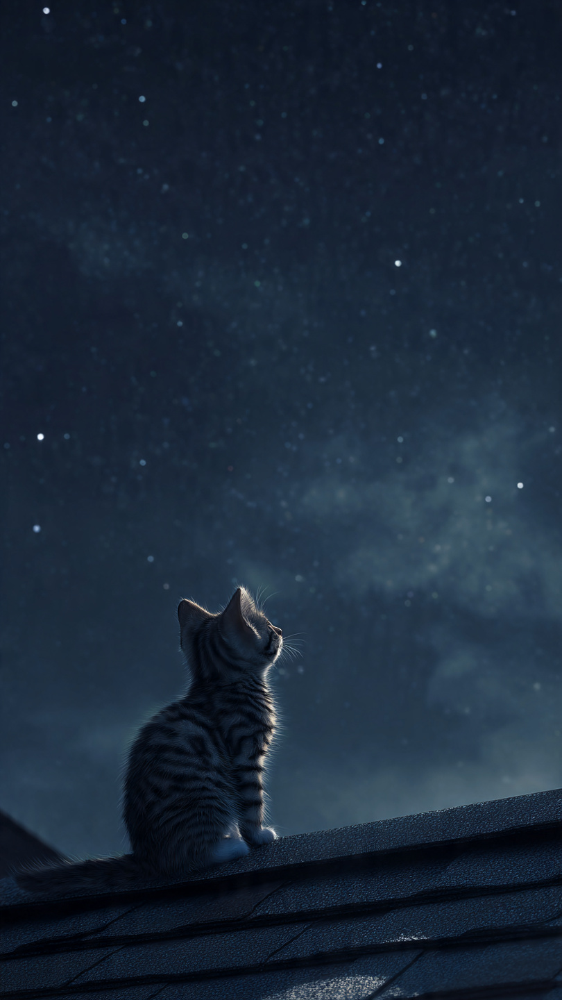
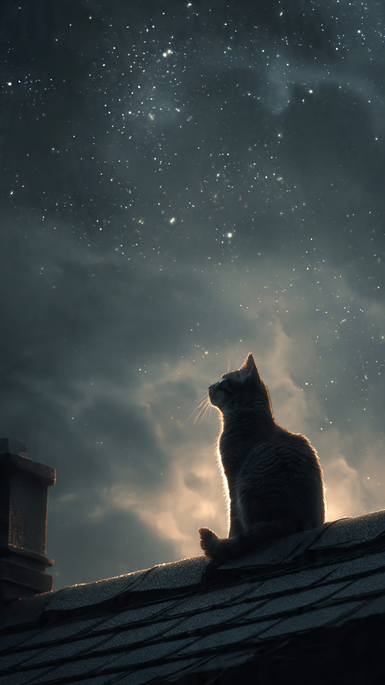

```html
🐱 القطة التي كانت تتحدث مع النجوم | قصص أطفال
```
في ليلة هادئة مليئة بالنجوم، كانت تعيش قطة صغيرة اسمها لونا في منزل صغير بجانب الغابة.
كانت لونا مختلفة عن باقي القطط.
فبينما كانت القطط الأخرى تحب اللعب طوال النهار والنوم ليلًا، كانت لونا تحب الجلوس قرب النافذة والنظر إلى السماء.
كانت تشعر أن النجوم تحاول أن تخبرها بشيء.
كل ليلة كانت ترفع رأسها وتقول:
"أتمنى لو أستطيع التحدث معكم."
وكانت جدتها تبتسم وتقول لها:
"ربما في يوم من الأيام ستكتشفين أن السماء أقرب مما تظنين."
لكن لونا لم تفهم معنى كلامها.
في إحدى الليالي، حدث شيء عجيب.
بينما كانت لونا تنظر إلى القمر، بدأت إحدى النجوم تلمع أكثر من باقي النجوم.
ثم تحركت ببطء نحو الأرض!
اقترب الضوء من نافذتها، وتحول إلى نجمة صغيرة لامعة.
فتحت لونا عينيها بدهشة.
قالت النجمة:
"مرحبًا يا لونا."
"لقد سمعنا أمنيتك."
تراجعت لونا قليلًا وقالت:
"هل... هل تستطيع النجوم الكلام؟"
ضحكت النجمة وقالت:
"بالطبع، لكن ليس كل البشر والحيوانات يستطيعون سماعنا."
أخبرت النجمة لونا أن هناك مشكلة في السماء.
فقد اختفى جزء من ضوء النجوم، وأصبحت بعض النجوم غير قادرة على اللمعان.
وقالت:
"نحتاج إلى قطة تملك قلبًا شجاعًا لمساعدتنا."
نظرت لونا إلى السماء بدهشة.
لم تكن تتوقع أن تتحول أمنيتها الصغيرة إلى مغامرة كبيرة.
لكنها قررت أن تساعد.
ولم تكن تعرف أن رحلتها بين النجوم ستكشف لها سرًا قديمًا عن الكون.
📷 الصورة رقم 1

قفزت لونا فوق ظهر النجمة الصغيرة، وانطلقتا معًا نحو السماء.
كانت هذه أول مرة ترى فيها القطة العالم من فوق.
رأت الغابات والبحار والجبال تلمع تحت ضوء القمر.
قالت لونا بدهشة:
"العالم أجمل مما كنت أتخيل!"
وصلت لونا إلى مكان بين النجوم يسمى حديقة السماء.
كانت مليئة بنجوم صغيرة تتحرك مثل الفراشات المضيئة.
لكن كان هناك شيء غريب...
بعض النجوم كانت ضعيفة ولا تضيء كما كانت من قبل.
اقتربت نجمة كبيرة من لونا وقالت:
"منذ فترة، اختفى حجر النور."
"وهو الحجر الذي يمنح النجوم قوتها."
سألت لونا:
"وأين اختفى؟"
أجابت النجمة:
"لا نعرف، لكنه ترك أثرًا يقود إلى مكان بعيد خلف السحب الفضية."
بدأت لونا والنجمة الصغيرة البحث عن الحجر.
مرّتا عبر طرق من الضوء، وشاهدتا كواكب ملونة، وسبحتا بين مجموعات من النجوم.
وفي الطريق، وجدت لونا نجمة صغيرة حزينة تختبئ.
قالت النجمة:
"أنا لا أستطيع اللمعان مثل الآخرين."
اقتربت منها لونا وقالت:
"كل نجمة لها ضوؤها الخاص، حتى لو كان صغيرًا."
عندما سمعت النجمة كلمات لونا، بدأت تلمع قليلًا.
فهمت لونا أن قوة النجوم ليست فقط في الضوء...
بل في الأمل الذي تحمله.
وأخيرًا، وصلتا إلى مكان مظلم خلف السحب الفضية.
هناك وجدتا شيئًا يتحرك بين الظلال.
كان يحمل حجر النور!
لكن المفاجأة أن من أخذه لم يكن عدوًا كما ظنتا.
📷 الصورة رقم 2

اقتربت لونا بحذر من المخلوق الذي يحمل حجر النور.
كان مخلوقًا صغيرًا يشبه الغيمة، وله عينان لامعتان.
قالت لونا:
"لماذا أخذت حجر النور؟"
خفض المخلوق رأسه وقال:
"لم أرد سرقته..."
"كنت أريد فقط أن أستعير بعض الضوء."
تعجبت لونا وسألته:
"ولماذا تحتاج إلى الضوء؟"
أجاب المخلوق:
"أعيش في مكان مظلم بعيد، ولا يزورني أحد. كنت أريد بعض النور لأجعل منزلي جميلًا."
فهمت لونا أنه لم يكن شريرًا، بل كان وحيدًا.
قالت له:
"يمكنك أن تطلب المساعدة بدلًا من أخذ شيء لا يخصك."
اعتذر المخلوق، وأعاد حجر النور إلى مكانه.
وفجأة...
أضاءت السماء كلها من جديد.
بدأت النجوم تلمع بألوان رائعة، وعادت حديقة السماء أجمل من قبل.
شكرت النجوم لونا وقالت:
"لقد أنقذتِ نورنا."
لكن لونا ابتسمت وقالت:
"أنا لم أفعل ذلك وحدي، كل ما فعلته هو أنني استمعت وفهمت."
قبل أن تعود إلى الأرض، أعطتها النجمة الصغيرة هدية.
كانت نجمة صغيرة يمكنها أن تضيء غرفتها في الليالي المظلمة.
وعندما عادت لونا إلى منزلها، أصبحت تنظر إلى السماء بابتسامة.
فقد عرفت أن النجوم ليست مجرد نقاط مضيئة بعيدة...
بل هي قصص وأصدقاء ينتظرون من يسمعهم.
ومنذ ذلك اليوم، أصبحت لونا القطة التي تتحدث مع النجوم، وتحكي للجميع أن اللطف والفهم يمكنهما حل أكبر المشكلات.
🐱⭐ انتهت القصة ⭐🐱
العبرة:
الاستماع للآخرين وفهم مشاعرهم قد يحول المشكلة إلى صداقة جديدة.